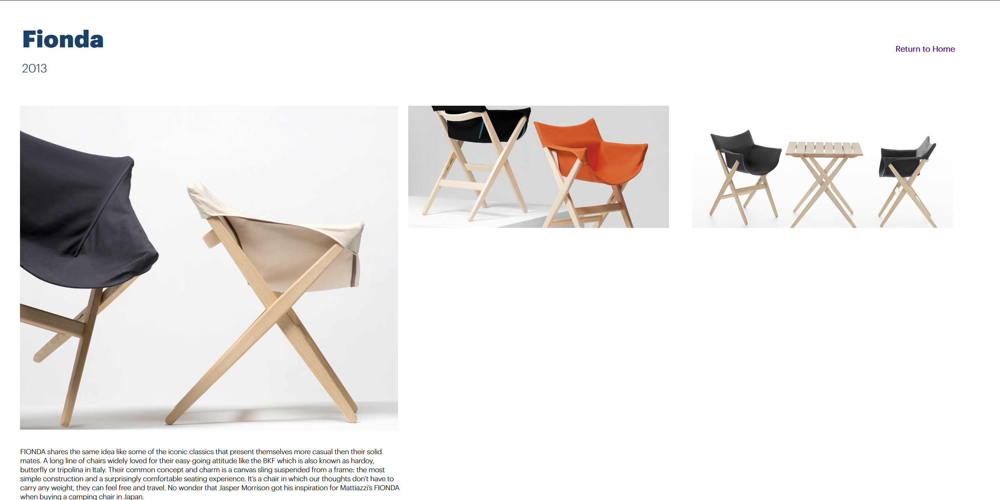
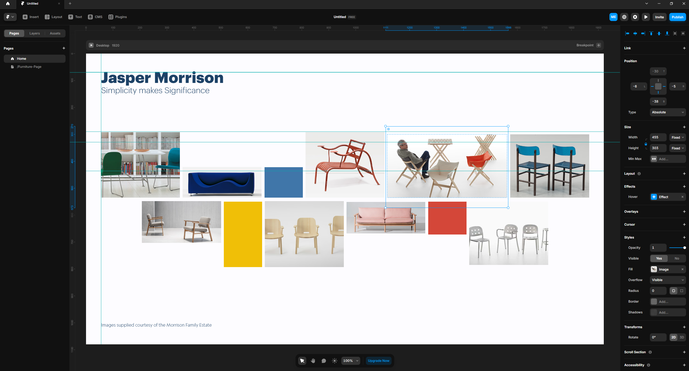

JASPER MORRISON SITE
Visual Communication
Overview
Gallery website for designer Jasper Morrison. A responsive handcoded website featuring background and history of Morrison's most sleek pieces. Making sure to include descriptions as well as make the website a piece of art itself. I drafted the skeleton of the site in inDesign, Illustator, and finally ported to framer. While I could have just exported the website through framer, I wanted to practice my HTML and CSS skills.
Capturing Morrison's minimalistic style inside of the website, with soft tones, subtle icons in the background, and keeping to central focus on the designs.

This a mock-gallery site I did back in summer to teach myself composition and UI/UX. I Challenged myself to think modualarly with this project, as keeping a gallery space in real life is very important to be able to slot in different pieces from different artists.
 